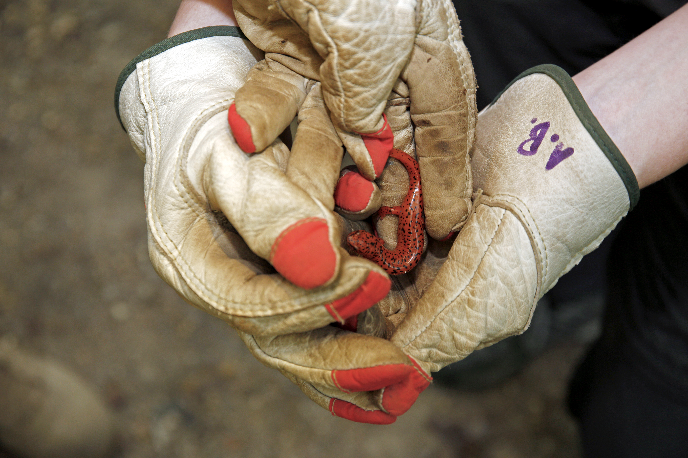
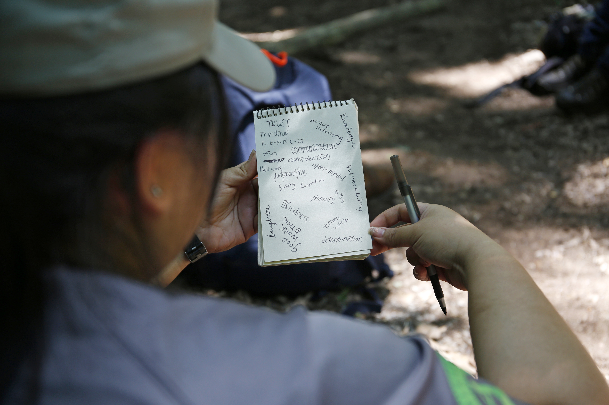

In Tennessee, Teenagers Are Taking On Trail Maintenance
By: Jenni Gritters
The story behind how four high schoolers formed a first-ever work crew comprised entirely of women to tackle backlogged projects in Chickamauga and Chattanooga National Military Park this summer.
While the rest of the world was reading news articles about the National Park Service’s more than $11 billion maintenance backlog, 18-year-old Alyssa Dela Cruz was doing something else entirely: She was working on park service land.
During the month of June 2019, Dela Cruz joined three other high-schoolers from Chattanooga, Tennessee, to form an all-women’s teen Conservation Legacy work crew. Each morning, Dela Cruz showed up at the Chickamauga and Chattanooga National Military Park, which straddles the Georgia-Tennessee state line and preserves the sites of two major battles of the American Civil War. From 7:30am to 4pm, she worked on trail maintenance projects with her crewmates, often hiking two or three miles on-trail with all of her tools, a backpack, a gallon of water, and protective gear. She spent her days clearing trails, widening pathways, building retaining walls, and redirecting water streams off-trail. For her time, she was paid a small stipend and offered educational programming to teach her about what it’s like to get involved with our public lands on a grassroots level.
“This was a very life-changing experience for me,” she says. “My crew reminded me that we can do anything we put our minds to. We as women forget how strong we actually are and how much power we actually hold.”

Alyssa Dela Cruz uses a tool called a rogue hoe to clear a water bar on the Red Trail within Chickamauga and Chattanooga National Military Battlefield. (Photo Credit: Conservation Legacy/Rose Clements)
Dela Cruz is only one of hundreds of members of the Southeast Conservation Corps (SECC), a local program that falls under the purview of the Conservation Legacy, which provides support to local grassroots conservation programs. Through the SECC, youth, young adults and military veterans are placed in “meaningful service projects related to natural resource management and land stewardship,” on public lands around the Southeast, according to SECC Founder and Director Brenna Kelly. Teens like Dela Cruz apply for the program and are assigned a crew based on their interests. The terms of service range from four to six weeks for teen crews, and can be up to 52 weeks long for young adults and veterans. Dela Cruz’s crew, affectionately known as the Trail Angels, is the first teen cohort comprised entirely of women in the history of the SECC.
During the past few years, funding and workers from the Conservation Legacy have become paramount to keeping our public lands usable. According to the National Park Service, as of July 2019, repairs and maintenance totaling more than $11.9 billion were needed for roads, buildings, utility systems and other structures on park service lands. The amount of needed maintenance has been increasing year-over-year. Policy makers are currently working on a bipartisan effort known as the Restore Our Parks Act, which would establish a Public Lands Infrastructure Fund to address deferred maintenance to the tune of $6.5 billion over a five-year period, but the bill has not yet made it out of committee.
Because of the lack of park service funding for maintenance projects, individual park service superintendents and directors have started to look at alternative options—like working with the SECC—to keep their lands and trails accessible for visitors. Katherine Chesson, vice president of programs and partnerships at the National Park Foundation, works with corporate partners to funnel funding toward Conservation Legacy crews, among other groups, hoping to advance these efforts toward tackling needed maintenance projects. (REI is one such partner and has donated nearly $1.5 million to help conservation corps initiatives in the last few years alone.)
Clearing water bars on the trail occasionally reveals hidden creatures. The crew discovered this salamander while working and transported it to a safer area off the trail. (Photo Credit: Conservation Legacy/Rose Clements)
“The $11.9 billion deferred maintenance is a front-and-center NPS issue,” Chesson says. “Our role is addressing priority needs around trail repair, historic structures, and repair and rehab … and work crews offer a sweet spot for trails and backcountry work that also brings people together. These teams won’t tackle the whole $11.9 billion, but they will help local lands with specific needs.”
Chickamauga and Chattanooga Military Park Chief Ranger Todd Roeder says working with SECC crews like Dela Cruz’s group this summer was an incredibly positive experience for him and his coworkers—and it made a big difference for park visitors, too.
“Our maintenance staff has been cut down and at this park, we don’t have the manpower to keep the trails up,” he says. “So we have an agreement with the Conservation Corps to get trails cleaned up over the summer. We love them to death and the impact has been great.”
Last winter was a “rough one,” Roeder says, with lots of unexpected storms causing many trails to be washed out or in need of repairs so they could be opened for hikers. Foliage flourished into the park over the spring and summer months, thanks to the rain, leading to considerable overgrowth on the trails.

Dela Cruz looks back at her work while crew leader Rei Argeroplos clears a water bar. (Photo Credit: Conservation Legacy/Rose Clements)
The Southeast Conservation Corps crews working at the park this summer rolled up their sleeves and got to work on these projects. They built retaining walls so the trails wouldn’t get washed out again. Kelly says Dela Cruz’s crew worked specifically on the battlefields of the Chickamauga and Chattanooga National Military Park. They also cleared the Mountain Beautiful Trail on Lookout Mountain, which Roeder says was so overgrown due to years of neglect and massive spring growth, that visitors had started to complain.
“You could see grass up to your shoulders,” Dela Cruz says of the Mountain Beautiful Trail. “There was barely any trail left, but by the end of our time, there was a huge trail three to five feet wide for several miles. We changed the whole thing.”
This was the first time the park has made use of a teen SECC crew, and Roeder says it was a win, both in terms of education and getting work done. Over the course of the summer, two all-women crews completed five miles of trail maintenance and installed 15 drains. They also maintained 15 water bars, which help redirect water off the trail, and installed 140 feet of turnpike, which elevate trails above wet ground. Overall, this totaled more than 1,000 hours of service completed for the Chickamauga and Chattanooga National Military Park.
Beyond the numbers, Dela Cruz says the program taught her that she can handle challenging physical projects, no matter her gender or identity. “Just because we’re girls, that doesn’t mean we can’t do physical labor,” she says. “In conservation, there aren’t many females at all, but this crew made me comfortable to think about doing this job. I felt welcome and safe to make mistakes.”
The crew kept a journal throughout their season. On this page, they took turns listing values that were important to them and that they wanted to uphold within their team. (Photo Credit: Conservation Legacy/Rose Clements)
Kelly says she loved working with the all-women teen crews as she wishes she’d had a community like that when she was cutting her teeth in the conservation and natural resource management world years ago. “I have been overwhelmed with joy, pride, and emotion this year as we have moved our programmatic needle forward with regards to inclusivity and equity,” she says.
Chesson agrees, noting that teen conservation corps programs provide young people with firsthand experience of what a career in conservation might look like. “We are trying to build the next generation of National Park Service stewards and supporters,” she says.
Would Dela Cruz work on public lands again? Absolutely, she says—and more broadly, she believes the program has impacted her sense of agency in taking care of our natural resources. “I want my kids to be able to enjoy the stuff that I enjoy,” she says. “We take things for granted with all this tech and we don’t even get outside anymore. But I don’t want [our national parks] to go away!”

Dela Cruz and crewmate Leah Swafford (Photo Credit: Conservation Legacy/Rose Clements)
“This was a very life-changing experience for me,” Dela Cruz says. “My crew reminded me that we can do anything we put our minds to. We as women forget how strong we actually are and how much power we actually hold.”
The summer experience also taught her that she has the power to make a change in our natural environment, however small. “If you have a park near you, look things up and see how you can help by volunteering or investing in programs,” she says. “There’s so much to be done and not enough people who are aware of it, but even the littlest things can make a change.”